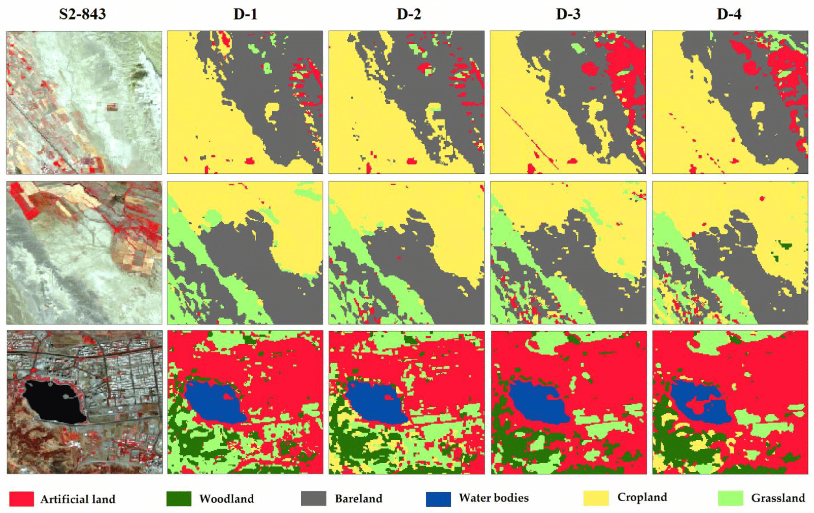

| Satellite | SpatialResolution | SwathWidth | Sensor | RevisitTime | NumberOfBands | ComparableBands |
|---|---|---|---|---|---|---|
| Landsat-8 | 30m | 185km | Operational Land Imager (OLI) | 16 days | 11 | blue: 485 nm, green: 563 nm, red: 655 nm, NIR: 865 nm, short-wave infrared 1 (SWIR1): 1610 nm, SWIR2: 2200 nm |
| Sentinel-2 | up to 10m | 290km | Multispectral Instruments (MSI) | 5 days | 13 | blue: 490 nm, green: 560 nm, red: 665 nm, NIR: 842 nm, SWIR1: 1910 nm, and SWIR2: 2190 nm |
1 Introduction to Remote Sensing
1.1 Summary
As a relative newbie to remote sensing there was so much new information this week that it’s very difficult to choose even a few things to talk about without writing an whole essay. Therefore I have decided that the best way to summarise this would be through a mind map Figure 1.1.

There is so many topics that could be discussed further but to focus quickly on the spectral bands. Images produced at different bands are what make up the creation of useful and relevant images. Personally I have previously attempted to use earth observation data without understanding the differences between the bands and this made the task at hand incredibly difficult and mainly involved mindlessly following guides and videos just to get a semi-readable output. So this weeks introduction to remote sensing really helped me to understand what bands relate to which information on the ground. And importantly how the different bands can be combined depending on the purpose of any analysis. The list of use cases from combining spectral bands is incredible, EOS Data Analytics (2025) and USGS (2024) provide a succinct summary of some of the common use cases.
Whilst many of the use cases available are fascinating, as this is an introduction to remote sensing it would be easy to get lost in the amount of use cases on offer. As such I have instead decided to focus on a comparison between two of the more openly available satellites, Landsat-8 and Sentinel-2.
1.2 Application
Using the basic summary (Table 1.1) we can quickly see key differences between Landsat-8 (LS8) and Sentinel-2 (S2) particularly the spatial resolution and number of bands. However there are six comparable bands which means we can use the data of each satellite to compare against each other. This has the bonus of greater temporal availability. Although we should be wary of subtle differences between wavelengths when making comparisons. The differences in spatial resolution should also be considered and may require resampling dependent on use case.
Various methodologies can be employed to compare LS8 and S2, Mandanici and Bitelli (2016) uses regression/correlation methods whereas Nasiri et al. (2022) complements this using visual comparisons. Both options are effective but the visual elements would be simpler to understand if used for policy makers rather than sensor comparison.
The statistical approach (Mandanici and Bitelli 2016) showed a positive correlation between the corresponding bands. Although limitations identified included radiometric differences and discrepancies in reflectance value’s relevance. The radiometric differences are identified as ~2.5% for all common bands (Barsi et al. (2018)), the significance of which is dependent on use-case. The importance of statistical methods is highlighted by visualising differences between LS8 and S2 Figure 1.2. The S2 image is slightly darker but it is difficult to spot any key differences. Therefore at this level of analysis it could be suitable to use either sensor’s data.

For more nuanced analysis the sensor’s differences begin to have greater influence. Particularly evident in Figure 1.3 where artificial land identified by LS8 (DS4) within the water body is far greater than the S2 image (D2). This emphasises the significance of different use cases that comparable datasets are used.

1.2.1 Limitations
The work of Mandanici and Bitelli (2016) appears less reproducible as there is less transparency about the tools used. This is likely due to the need for propitiatory applications to produce the analysis. This is also a comparison paper so the specific methodology and tools used may be seen as insignificant compared to the results. Nasiri et al. (2022) are more transparent about their use of Google Earth Engine (GEE). GEE avoids local storage issues and provides greater computing power for analysis and processing (Carrasco et al. 2019) making it accessible at a lower cost.
A general issue of remote sensing papers is the small samples used. Therefore it cannot be said with certainty whether results would be replicated in other areas. Mandanici and Bitelli (2016) choose sites of differing landscapes and climate, Nasiri et al. (2022) used a single area with distinguishable land uses. Whilst useful it’s not clear whether similar results are expected in other areas of interest. Although computational resource and time would restrict larger area analysis.
1.3 Reflection
This week brought a range of new topics that we could barely scratch the surface of, however this diary entry and reading the articles discussed in Section 1.2 has really helped to shape my understanding in these areas. Before this I was very much focused on the highest spatial resolution must always be the best but it obviously isn’t that clear cut. The specific use case must be considered to ensure that the correct balance of resolution (all types), spectral bands and costs is made for the expected output.
A key part of this is how the different spectral bands (and their wavelengths) can be used for different purposes. This will be extremely useful in the coming months as we look at our own analysis in this course and in CASA0025, but also as part of my work in Local Government as we begin to use a new Earth Observation Data Hub. So I’m looking forward to finding out more about the tools at our disposal and how identifying the right sensor’s data can dictate the success of our work.